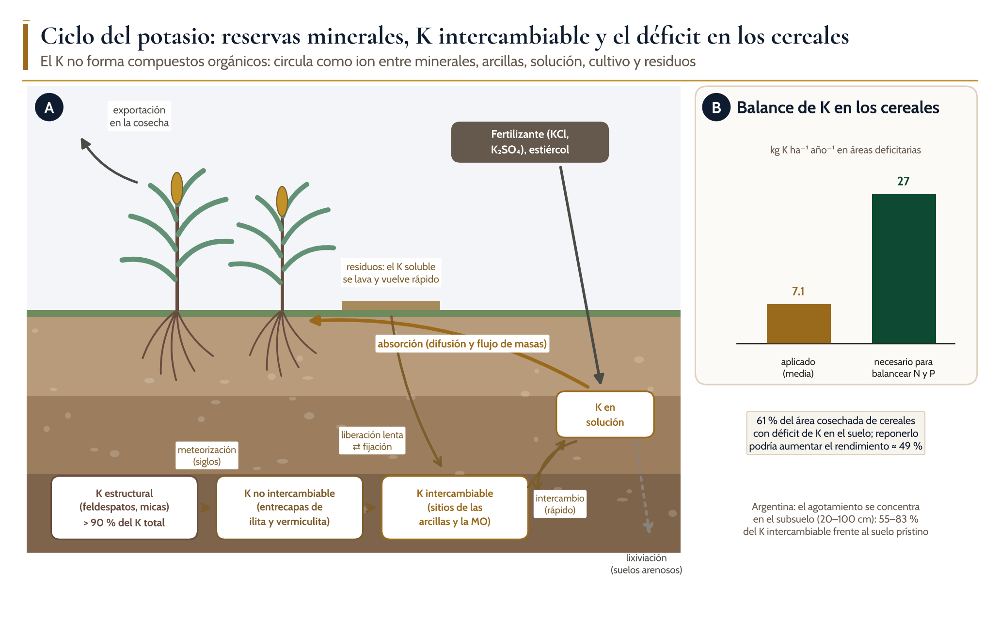
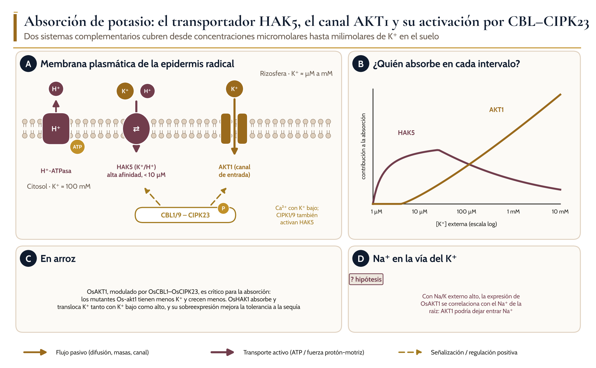
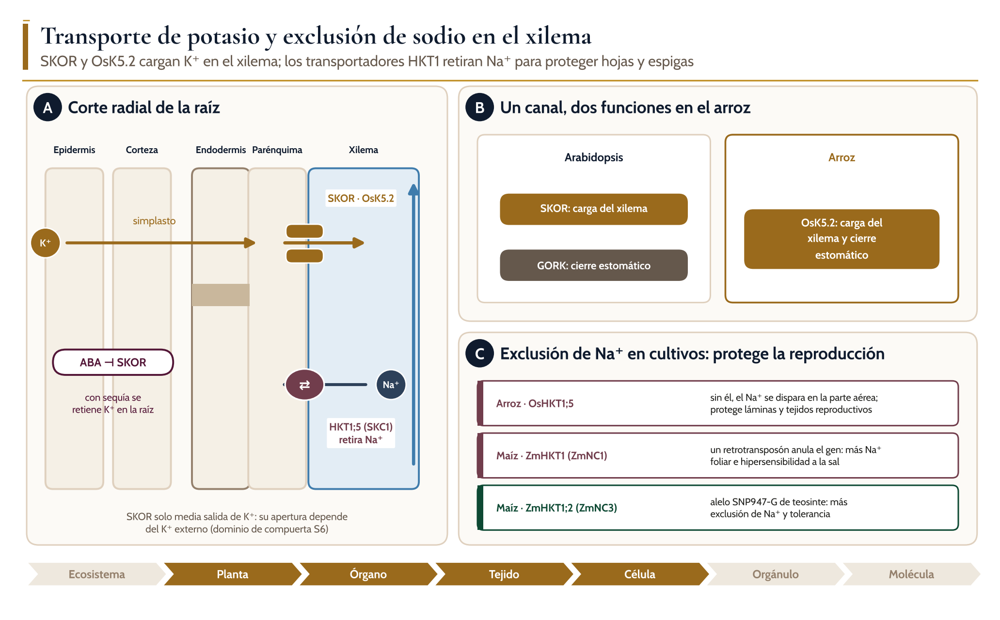
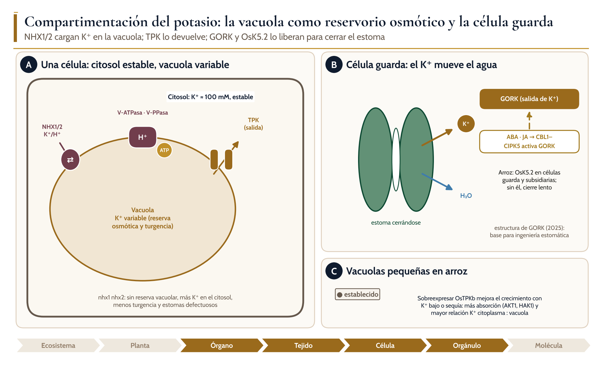
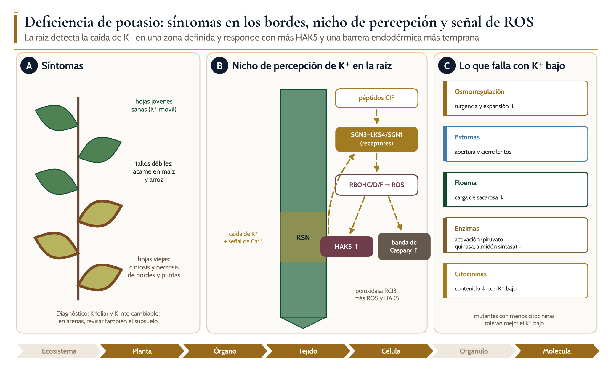
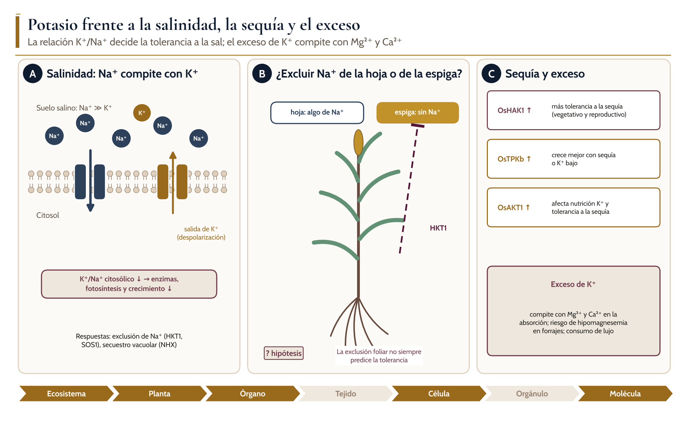

Ciclos biogeoquímicos, absorción, transporte, distribución y homeostasis del agua y los nutrientes en las plantas
K
Módulo 5. Potasio
Dr. Juan Patishtan Pérez Licenciatura avanzada, maestría y doctorado · Agosto–diciembre 2026

Introducción
Objetivos de aprendizaje
El potasio es el catión más abundante en la célula vegetal y, junto con el nitrógeno, el nutriente mineral que los cultivos absorben en mayor cantidad: suele representar entre 2 y 5 % de la masa seca. A diferencia del N y el P, no forma parte de ninguna molécula orgánica. Su función es iónica: mantiene la turgencia, mueve el agua de las células guarda, equilibra las cargas del citosol, activa decenas de enzimas y acompaña a la sacarosa en el floema. Por eso el K⁺ se mueve rápido, se recicla dentro de la planta y vuelve al suelo en cuanto se lavan los residuos.
1Describir los compartimentos del K en el suelo (estructural, no intercambiable, intercambiable y en solución) y los procesos que los conectan.
2Explicar la absorción por el transportador HAK5 y el canal AKT1, y su activación por los complejos CBL–CIPK.
3Analizar la carga del xilema por SKOR (Arabidopsis) y OsK5.2 (arroz), y la exclusión de Na⁺ por los transportadores HKT1.
4Integrar la compartimentación vacuolar (NHX, TPK) y el movimiento estomático (GORK) en un modelo de homeostasis.
5Describir la percepción de la deficiencia de K⁺ en la raíz y la señal de ROS.
6Proponer estrategias de manejo del K en arroz, maíz, sorgo, caña de azúcar y soja, considerando el subsuelo y la salinidad.
5.1 Ciclo biogeoquímico del potasio
Ciclo del potasio en un agroecosistema
Ael K estructural de feldespatos y micas se libera por meteorización hacia las entrecapas de las arcillas (K no intercambiable), que intercambian lentamente con el K de los sitios de carga (K intercambiable); este equilibra rápidamente con el K de la solución, que el cultivo absorbe. Los residuos devuelven el K soluble y la cosecha lo exporta.
Btasa media de fertilización potásica en las áreas cerealeras con déficit frente a la necesaria para balancear el N y el P.
5.1 Ciclo biogeoquímico del potasio
Compartimentos de K en el suelo
Compartimento
Dónde está
Velocidad de liberación
Cómo se mide
Relevancia agronómica
Estructural
Feldespatos, micas
Siglos (meteorización)
K total
Reserva a largo plazo
No intercambiable
Entrecapas de ilita y vermiculita
Lenta (semanas a años)
Extracción con ácido
Amortigua el agotamiento; fija K aplicado
Intercambiable
Sitios de carga de arcillas y MO
Rápida
Acetato de amonio
Base del diagnóstico de fertilidad
En solución
Agua del suelo
Inmediata
Extracto acuoso
Absorción directa; lixiviable
5.1 Ciclo biogeoquímico del potasio
● Mecanismo establecido
Concepto clave: el K intercambiable de la capa arable puede engañar
1
Un análisis de 0–20 cm puede indicar suficiencia mientras el subsuelo se agota, porque los cultivos de raíz profunda extraen K de capas que no se muestrean.
2
La capacidad de amortiguamiento (arcilla, limo, K no intercambiable) determina cuánto tarda en aparecer la deficiencia.
3
Las recomendaciones deben considerar el balance de K del sistema (entradas menos salidas) y no solo el valor del análisis (Correndo et al., 2021).
5.2 Absorción de potasio
Absorción de potasio

Aen la membrana plasmática de la epidermis radical, la H⁺-ATPasa genera la fuerza protón-motriz que impulsa al simportador HAK5 (K⁺/H⁺, alta afinidad) y el canal AKT1 permite la entrada pasiva de K⁺; ambos se activan por fosforilación mediante CBL1/9–CIPK23.
Bcontribución relativa de HAK5 y AKT1 según la concentración externa de K⁺ (esquema cualitativo).
Clos homólogos en arroz.
Dhipótesis sobre la entrada de Na⁺ por AKT1.
5.2 Absorción de potasio
? Hipótesis o debate
El sodio en la vía del potasio
1
El Na⁺ no es esencial, pero en concentraciones bajas puede mejorar el crecimiento, sobre todo con deficiencia de K⁺; existen sistemas de absorción de Na⁺ de alta afinidad de las familias HKT y HAK (Nieves-Cordones et al., 2016).
2
En ambientes salinos, el Na⁺ se acumula en los tejidos y provoca toxicidad, déficit hídrico y deficiencia de K⁺.
3
Que AKT1 sea una vía de entrada de Na⁺ en arroz con Na/K alto es aún una hipótesis basada en correlaciones (Ahmad et al., 2016).
5.3 Transporte a corta y larga distancia
Transporte de potasio y exclusión de sodio

Acorte radial de raíz; el K⁺ cruza la corteza por el simplasto y SKOR (Arabidopsis) u OsK5.2 (arroz) lo liberan al xilema; el ABA reprime SKOR; HKT1;5 (SKC1) retira Na⁺ del xilema en las células del parénquima.
Ben arroz, OsK5.2 reúne las funciones que en Arabidopsis se reparten entre SKOR y GORK.
Calelos de HKT1 en arroz y maíz que modifican la exclusión de Na⁺.
5.3 Transporte a corta y larga distancia
Proteínas que controlan la adquisición y la distribución del K⁺
Proteína
Función
Localización
Evidencia en cultivos
HAK5 (OsHAK1)
Simporte K⁺/H⁺ de alta afinidad
Epidermis radical
OsHAK1 en arroz; tolerancia a la sequía
AKT1 (OsAKT1)
Canal de entrada de K⁺
Epidermis y corteza radical
Mutantes de arroz con menos K⁺
SKOR / OsK5.2
Liberación de K⁺ al xilema
Estela de la raíz
OsK5.2 también cierra estomas
HKT1;5 (SKC1)
Retiro de Na⁺ del xilema
Parénquima del xilema
QTL de tolerancia a la sal en arroz
ZmHKT1, ZmHKT1;2
Exclusión foliar de Na⁺
Raíz
Alelos naturales en maíz y teosinte
NHX1/NHX2
Entrada activa de K⁺ a la vacuola
Tonoplasto
Conservados; turgencia
TPKb (arroz)
Canal de K⁺ del tonoplasto
Vacuolas pequeñas
Sobreexpresión mejora tolerancia
5.4 Distribución, compartimentación y homeostasis
Compartimentación del potasio

Aen la célula, el K⁺ citosólico se mantiene alrededor de 100 mM; NHX1/2 cargan K⁺ en la vacuola acoplado a la salida de H⁺ (gradiente creado por la V-ATPasa y la V-PPasa) y los canales TPK lo devuelven al citosol.
Ben la célula guarda, la salida de K⁺ por GORK arrastra agua y cierra el estoma; ABA y ácido jasmónico (vía CBL1–CIPK5) activan a GORK; en arroz, OsK5.2 cumple esta función.
Cefecto de sobreexpresar OsTPKb en arroz.
5.4 Distribución, compartimentación y homeostasis
Distribución y control del K en cada nivel de organización
Nivel
Dónde se distribuye el K
Mecanismo de control
Ejemplo en cultivos
Ecosistema
Minerales, arcillas, solución, residuos
Meteorización, fijación, intercambio
Agotamiento del subsuelo en Argentina
Planta
Tallos y hojas más que grano
Recirculación por floema y xilema
Alta exportación en caña y forrajes
Órgano
Raíz o parte aérea
SKOR / OsK5.2; ABA
Retención en raíz con sequía
Tejido
Estomas, xilema
GORK, OsK5.2, HKT1
Relación K⁺/Na⁺ foliar en arroz
Célula
Citosol (≈ 100 mM) y vacuola (variable)
NHX1/2, TPK
OsTPKb en arroz
Molécula
K⁺ como cofactor y osmolito
Activación enzimática
Síntesis de almidón y proteínas
5.5 Funciones del potasio en la planta
Funciones del potasio y el proceso en que interviene
Función
Moléculas o procesos
Importancia agronómica
Osmorregulación
Principal osmolito inorgánico de la vacuola
Turgencia y expansión celular
Movimiento estomático
Entrada y salida de K⁺ en células guarda
Transpiración, intercambio de CO₂, uso del agua
Activación enzimática
Piruvato quinasa, almidón sintasa y otras
Metabolismo del C y del N
Síntesis de proteínas
Estabilidad y función del ribosoma
Calidad del grano
Transporte en el floema
Carga de sacarosa y balance de cargas
Llenado del grano; azúcar en caña
Balance de cargas
Contraión de aniones orgánicos e inorgánicos
pH citosólico; transporte de NO₃⁻
Resistencia
Paredes y tallos más firmes
Menos acame y enfermedades
5.6 Deficiencia, exceso y toxicidad
Deficiencia de potasio

Asíntomas en las hojas viejas (clorosis y necrosis de bordes y puntas), tallos débiles y hojas jóvenes sanas por la removilización del K⁺.
Bnicho de percepción de K⁺ (KSN) en la raíz; la caída de K⁺ y las señales de Ca²⁺ activan, a través de péptidos CIF y receptores SGN3–LKS4/SGN1, a las NADPH oxidasas RBOH, cuyas ROS inducen HAK5 y aceleran la maduración de la banda de Caspary.
Cprocesos fisiológicos que fallan con K⁺ bajo.
5.6 Deficiencia, exceso y toxicidad
? Hipótesis o debate
Debate: ¿excluir Na⁺ de la hoja es la clave de la tolerancia a la sal?
1
La exclusión foliar de Na⁺ se propone a menudo como un subrasgo clave de la tolerancia, y los HKT1 son sus principales controladores en muchas especies.
2
Sin embargo, la exclusión foliar no siempre se correlaciona con la tolerancia: en algunos casos la hoja tolera Na⁺ sin perder rendimiento, siempre que HKT1 siga excluyéndolo de los tejidos reproductivos (Garcia-Daga et al., 2024).
3
Esto sugiere redefinir el papel de HKT1 como protector de la reproducción; los programas de mejoramiento deberían medir el Na⁺ en espigas y panículas, no solo en hojas.
5.6 Deficiencia, exceso y toxicidad
Potasio frente a la salinidad, la sequía y el exceso

Acon salinidad, el Na⁺ entra por canales y la despolarización favorece la salida de K⁺, lo que reduce la relación K⁺/Na⁺ citosólica.
BHKT1 excluye el Na⁺ de los tejidos reproductivos aunque la hoja acumule algo de Na⁺.
Cgenes de arroz cuya sobreexpresión mejora la tolerancia a la sequía, y consecuencias del exceso de K⁺.
5.6 Deficiencia, exceso y toxicidad
Contraste entre deficiencia y exceso de potasio
Aspecto
Deficiencia
Exceso
Síntoma visual
Clorosis y necrosis de bordes en hojas viejas
Síntomas de deficiencia de Mg²⁺ o Ca²⁺
Señal
KSN: Ca²⁺, CIF–SGN3, ROS; HAK5 ↑
HAK5 reprimido; consumo de lujo
Rendimiento
Acame, menor llenado, menos azúcar en caña
Sin respuesta; costo económico
Calidad
Menor resistencia a enfermedades
Forrajes con riesgo de hipomagnesemia
Ambiente
Agotamiento del subsuelo
Lixiviación en suelos arenosos
5.7 Respuestas adaptativas y regulación
? Hipótesis o debate
Debate: ¿mejorar HAK5 o los canales?
1
HAK5 es el componente clave cuando el K⁺ del suelo es muy bajo, por lo que se propone como objetivo para una agricultura tolerante a la deficiencia (Maierhofer et al., 2024).
2
Los canales y la regulación por CIPK determinan el uso del K en un intervalo amplio de concentraciones; la ingeniería de GORK apunta a la eficiencia de uso del agua más que a la nutrición (Zhang et al., 2025).
3
Las mejoras en un componente pueden alterar la relación K⁺/Na⁺ con salinidad; se necesitan ensayos de campo que midan a la vez K, Na, agua y rendimiento.
5.7 Respuestas adaptativas y regulación
Estrategias frente a la deficiencia, la sequía y la salinidad
Estrategia
Rasgo
Mecanismo
Evidencia
Absorber con K⁺ muy bajo
HAK5 / OsHAK1
Simporte K⁺/H⁺; activación por CIPK23, CIPK1/9
Arabidopsis; arroz
Percibir la deficiencia
Nicho KSN
CIF–SGN3–RBOH; ROS
Arabidopsis
Amortiguar en la vacuola
NHX1/2, TPKb
Reserva osmótica y liberación
OsTPKb en arroz
Ahorrar agua
GORK, OsK5.2
Cierre estomático rápido
Ingeniería estomática
Tolerar la sal
HKT1;5, ZmHKT1, ZmHKT1;2
Exclusión de Na⁺ del xilema
Arroz, maíz (alelo de teosinte)
5.8 Implicaciones agronómicas
Comparación de los cinco cultivos de referencia frente al potasio
Cultivo
Demanda y exportación
Etapa crítica
Riesgo principal
Manejo clave
Arroz
Alta; la paja retiene gran parte del K
Macollamiento a floración
Agotamiento si se retira la paja; salinidad costera
Devolver la paja; variedades con HKT1;5 (SKC1) en suelos salinos
Maíz
Alta en vegetativo
Hasta floración
Acame y pudrición de tallo
Balance de K del sistema; muestrear subsuelo
Sorgo
Moderada; raíz profunda
Hasta panoja
Agotamiento del subsuelo
Reposición según balance
Caña de azúcar
Muy alta: se retira toda la biomasa aérea
Gran crecimiento y maduración
Menos sacarosa con K bajo
Fertilización en cada corte; vinaza y residuos
Soja
Alta en el grano
Llenado de vainas
Agotamiento en rotaciones sin K
Reposición en la rotación maíz–soja
5.8 Implicaciones agronómicas
▲ Para el agrónomo
Para el agrónomo: cinco decisiones que dependen del potasio
1
1. Balance: comparar el K exportado por las cosechas con el aplicado en toda la rotación.
2
2. Muestreo: incluir el subsuelo (20–100 cm) en suelos con cultivos de raíz profunda.
3
3. Residuos: devolver paja, rastrojo y residuos de caña; contienen K soluble que vuelve rápido al suelo.
4
4. Salinidad: elegir variedades que excluyan Na⁺ de los tejidos reproductivos y mantener la relación K⁺/Na⁺.
5
5. Cationes: evitar dosis excesivas que reduzcan la absorción de Mg²⁺ y Ca²⁺, sobre todo en forrajes.
Cierre
Síntesis
01
El K no forma compuestos orgánicos; circula como ion entre minerales, arcillas, solución, cultivo y residuos.
02
El 61 % del área cerealera mundial tiene déficit de K, y el agotamiento puede concentrarse en el subsuelo.
03
HAK5 (K⁺/H⁺) domina con K⁺ muy bajo y AKT1 con concentraciones mayores; ambos se activan por CBL–CIPK23.
04
SKOR (Arabidopsis) y OsK5.2 (arroz) cargan el xilema; HKT1;5 retira Na⁺ y protege hojas y tejidos reproductivos.
05
NHX1/2 y TPK regulan la reserva vacuolar; GORK y OsK5.2 controlan el cierre estomático.
06
La raíz percibe la deficiencia en un nicho definido y responde con ROS, más HAK5 y una banda de Caspary más temprana.
Autoevaluación
Preguntas de autoevaluación
1Un suelo tiene K intercambiable alto en 0–20 cm tras nueve años de maíz–soja sin fertilizar. ¿Por qué podría haber agotamiento? ¿Qué mediría?
2Explique por qué HAK5 necesita la fuerza protón-motriz y AKT1 no, y en qué intervalo de K⁺ externo domina cada uno.
3Compare las funciones de SKOR, GORK y OsK5.2. ¿Qué fenotipo esperaría en un mutante osk5.2 con sequía?
4Prediga qué pasaría con la turgencia y los estomas de un mutante nhx1 nhx2. Justifique.
5¿Por qué la exclusión foliar de Na⁺ podría no predecir la tolerancia a la sal? Proponga una medición alternativa.
Fuentes verificadas
29
referencias verificadas: artículos con DOI, consultados en bases bibliográficas, y libros de texto. La lista completa, con autores, año, revista y enlace, está en el manual del módulo.